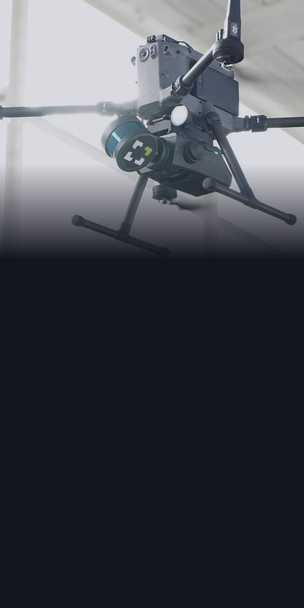
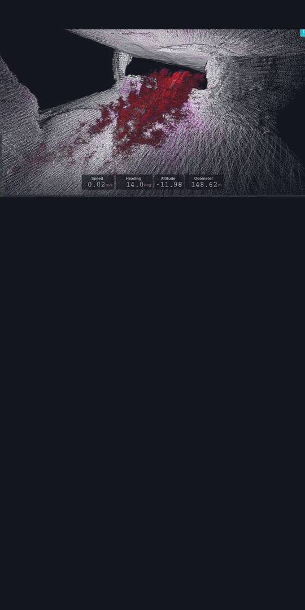
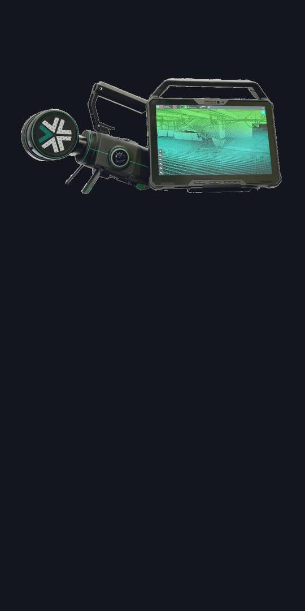
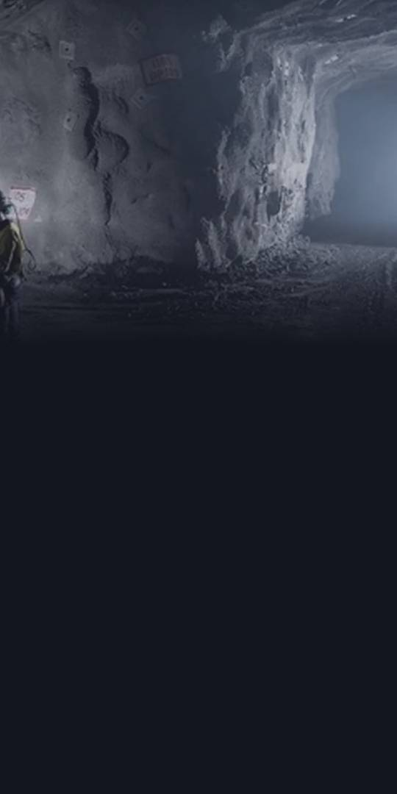

Exyn makes autonomous mapping systems and ExynAI software for dark, disconnected sites such as mines and tunnels.

At one customer's mine in Turkey, the company's Jul 30 release says Exyn Nexys cut capture time per scan from about 40 minutes to about 5, compared with the mine's previous survey methods.

The company says ExynAI runs on the robot itself, with no cloud. Its Nexys mapping payload mounts on drones and ground robots, or is carried by hand.

Q2 net loss: $6.9M, vs $2.9M in Q2 2025. Cash: about $4.5M at Aug 19, which the company expects is not enough for the next 12 months. Management has concluded substantial doubt exists about going concern.
Risks: going-concern doubt, a history of losses, cash of about $4.5M at Aug 19, ineffective controls, CEO resigned after an investigation. Forward-looking statements; not an offer. Management has concluded substantial doubt exists about going concern; the company expects cash will not cover the next 12 months, more funding is not assured and new equity would likely be significantly dilutive. The former CEO resigned Aug 19; an Audit Committee investigation found he improperly used ~$286,000 of company funds for personal expenses, and he agreed to repay it (no terms stated). Disclosure controls were not effective at Jun 30; a new material weakness was found. SEC or Nasdaq inquiries and shareholder suits are possible. One customer was 13% of Q2 revenue. Most Q2 revenue was hardware sales.